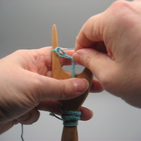

Material och verktyg
Du behöver en slynggaffel, garn, en sax och ett nål med en öga som är stor nog för garnet.
Slynggaffel
Slynggafflar har mycket variation i form, storlek och material. Man kan inte använda tjockt garn med en liten slynggaffel, men med en stor en kan man slynga även med sytråd om man har tålamodet. Jag föredrar en slynggaffel som är ca 5 cm bred och har ett handtag, men andra föredrar en gaffel utan handtag.
Om du vill tillverka en slynggaffel för dig själv eller om du bara vill se de olika sorterna, jag har foton av min slynggaffel samling på min blogg. Förutom slynggafflar i trä har jag också slynggafflar gjorda av ben eller med en 3D-skrivare. Du kan också kolla slynggafflar på olika museer.
Anatomin av en slynggaffel
En slynggaffel har två horn (1). Hornen kan vara ganska spetsiga eller helt rundade. Vissa slynggafflar har ett hål (3) i mitten, men det behövs inte nödvändigtvis, man kan klara sig bra utan. Slynggafflar kan ha ett handtag (4), men en slynggaffel utan handtag funkar också bra. Jag föredrar en slynggaffel med handtag för att då har den färdiga snodden (2) någonstans att gå.

Garn
Speciellt i början måste ditt garn vara slätt. Det borde också tåla en del dragning. Vissa 100 % ullgarn är så luddiga att det kan bli problem med att slynga med dem, men merinoull och släta sockgarn fungerar bra. Jag har inte prövat att slynga med akrylgarn, men slät akryl funkar väl lika bra som slät ull. När jag övar mig använder jag mest bomull, t.ex. virkgarn eller s.k. pärlgarn storlek 5. Man kan också använda sig av linnegarn, men det kan vara svårt att hitta någonting som är tillräckligt tjockt - om man börjar med ett mycket tunt garn är det svårare att se vad man håller på med och det tar också länge att få ihop snodden. Viskos och siden går också, men om garnet är mycket glatt, kan de första snoddarna bli aningen lösa.
När du har lärt dig grunderna, kan du experimentera med många sorters garn. Garn med kännbara förtjockningar fungerar inte, men jämnt luddiga garn går an när du lärt dig att justera snoddens fasthet efter garnet. I min blogg kan du se några exempel på experiment. Om du inte behöver vara tidsenlig, flerfärgade garn blir roliga snoddar. Även garn som ser råddiga ut i stickning blir fina snoddar.
Märk väl att en slynggaffelsnodd tar upp mycket garn. Min tumregel är 10:1, tio meter garn blir cirka en meter snodd. Regeln tycks gälla för de flesta garnvikterna.
Slyngning
Principen
Slyngning går ut på en enkel serie rörelser som upprepas om och om igen. Slyngning med slynggaffel är faktiskt en form av stickning (två maskors i-cord).
När man slynger med en gaffel, har man alltid en ögla runt vänster horn och en ögla och ett garn runt höger horn. Mellan dessa öglor finns den färdiga snodden med en mindre ögla i mitten. Man slynger genom att dra den högra öglan utåt tills den lilla öglan i mitten försvinner. Sedan lyfter man den ögla man håller i över hornet. Man drar lite i garnet och vänder gaffeln på så sätt att det högra hornet färdas närmast ens kropp. Om allt gick bra, hamnar man tillbaka i startpositionen med en ögla till vänster och en ögla och garnet runt höger horn, och således kan man börja om från början. Märk att i vanlig slyngning går garnet aldrig mellan hornen, alltid bara på utsidan av gaffeln.
Början
Det är faktiskt svårare att börja slynga än att slynga efter att man har en liten bit snodd. Försök att inte ge upp om du behöver ett par omgånger innan du klarar av början.
- Ta slynggaffeln i vänster hand och garnet i höger hand.
- För garnet bakom gaffeln.
- Gör en ögla med garnet runt högra hornet. Garnänden borde nu vara framför gaffeln (närmare dig).
- Dra i garnänden tills du har ca 15 cm garn framför gaffeln. Om din slynggaffel har ett hål, trä garnet genom hålet. Oansett om garnänden är på baksidan eller framsidan, tryck in den under fingrarna som håller i slynggaffeln.
- Nu fatta tag i garnet som kommer från nystanet, det borde vara bakom gaffeln. Vira garnet runt utsidan av gaffeln så att det kommer först bakifrån fram runt vänstra hornet, sen tillbaka bak runt högra hornet. Garnet gör en full runda runt gaffeln men går aldrig mellan de två hornen.
- Flytta garnet från nystanet till vänstra handen. I början kan det kännas lite krångligt att hålla i gaffeln och garnet och garnänden, men man vänjer sig så småningom.
- Till höger borde du nu ha en ögla lägre ner och ett garn högre upp. Fatta tag i öglan och dra den horisontalt ut från gaffeln. Lyft öglan över högra hornet.
- Vänd gaffeln medsols, d.v.s. så att högra hornet går närmast dig. Om du gjorde rörelsen rätt, har du igen ögla och garn till höger.
- Dra i högra öglan och lyft den över högra hornet. Om knuten i mitten (början på snodden) är lös, dra lite i garnändan. Vänd gaffeln sedan igen medsols (alltid åt samma håll).
- Dra i högra öglan tills den lilla öglan i mitten sätter sig på snodden, sedan lyft öglan du håller i över hornet. Vänd gaffeln. Om öglan i mitten är stor, kan du dra lite i garnet från nystanet (men dra inte för mycket, du behöver den lilla öglan i mitten).
When you have a small start, you can proceed.
Slyngning
 |
Make sure that the lucet is in a correct position: loop on the left, a small loop in the middle, loop and yarn on the right. |
|  | Grab the loop on the right. It is easier to get hold of it if you take it slightly in front of the lucet. |
 |
Pull the loop away from the lucet until the little loop in the middle disappears. Note that this defines the tension of your cord. If your cord is loose, try to pull the loop a bit further. If the cord is tight and the yarn doesn't want to move, pull a bit less at this phase. How far away from the lucet you pull the loop depends on the size of the loop in the middle and also the type of yarn. If you switch to a different yarn, you may have adjust your movements. |
 |
Lift the loop over the right prong. |
 |
Move the lucet to the right hand. With the left hand gently pull the yarn from the ball so that the loop in the middle (the one you just lifted) gets a bit smaller. Remember that you have to leave some loop there. |
 |
Flip the lucet clockwise, i.e. so that the right prong moves to the left closest to your body. |
 |
Move the lucet back to the left hand. If you flipped the lucet correctly, the yarn wound itself around the prong that ended up on the right. You are now back in the starting position. |
The abobe is not the only way to do basic lucet. If you find it clumsy to hold the yarn in your left hand and don't like moving the lucet from hand to hand, you can try luceting with the yarn in the right hand like I do in the video below. Also Ziggy Rytka has a video on this. I get up to my best speed in this technique, because it distills down to basically two movements: first I pull the loop away from the lucet, then I lift the loop and pull the yarn and flip the lucet all in one movement.
Avslutning
- When you want to end a cord, cut the yarn 15-20 cm from the lucet.
- Lift the next loop normally, but then pull through the yarn. Do not flip the lucet and do not touch the left loop, just pull the yarn until the former right side loop disappears. Now you only have a loop on the left.
- Put the yarn through the left loop. I haven't notice any big difference in the direction of the yarn, the main thing is that the yarn goes through the loop.
- Now you can lift the remaining loop off the lucet. Pull the yarn until the loop is tight. Now your cord is securely ended.
Finjustering
The yarn ends in the beginning and the end of the cord can be hidden in the cord. You need a needle for this. I mostly use blunt embroidery needles, for thicker yarn knitter's needles. Try to select a needle where the eye is just big enough to admit the yarn.
In some luceting books it is written that you can hide the end inside the cord as it is hollow. I have never managed this feat, instead I sew the yarn end onto the cord in an overcast stitch. I do this for couple of centimeters and then cut the yarn as close to the cord as possible. This way the end of the cord becomes a tiny bit thicker than the rest of the cord, but usually this doesn't matter.
The yarn I use on the video is very thick, but I use the same technique on pretty thin cords (linen cord of bobbin lace yarn was too thin to finish this way, I couldn't see the cord well enough).